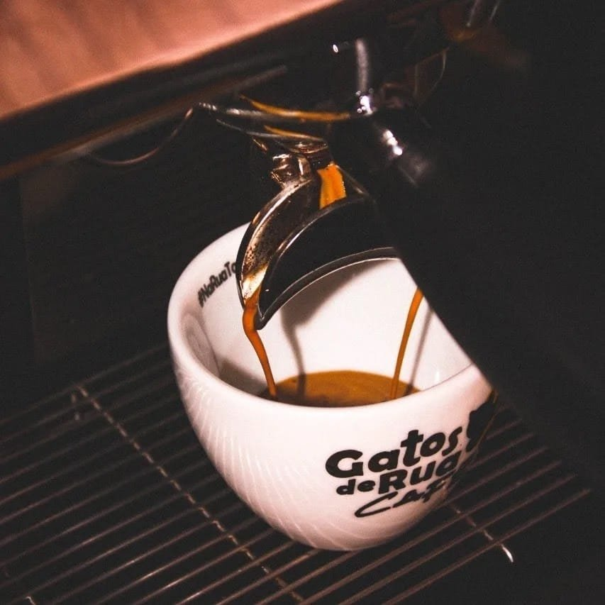

Da calçada para o quiosque
Na barraquinha
A família vendia empada e café numa pequena barraca nas ruas de Goiânia.
Fonte: Estadão, 14/06/2024Outubro de 2018
A Luana volta de um curso de barista em São Paulo e propõe o negócio. A família topa e começa do jeito que dá.
Fonte: Estadão, 14/06/2024
a xícara da casa“Quisemos nos associar à ideia do gato, que, mesmo quando está em situação de rua, mantém a elegância.”Igor Vasconcelos, sócio, ao Estadão